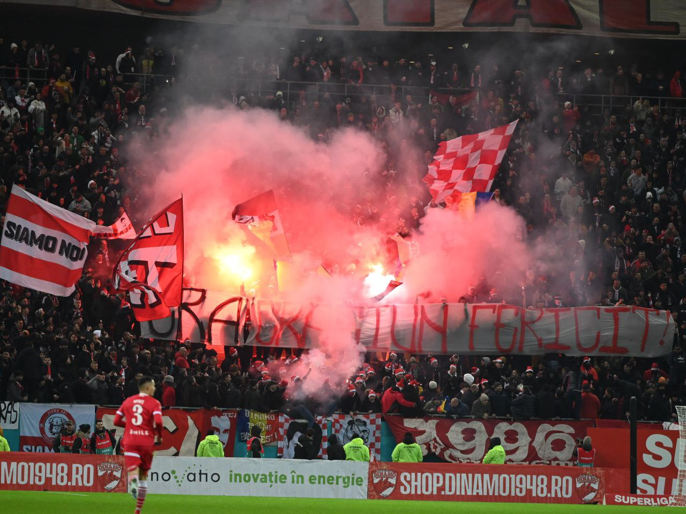

SUPERLIGA ROMÂNIEI 2026 / 27
ONE CLUB.
ONE HEART.
DINAMO.
Bucharest in our blood. Red and white in our hearts.
Follow every moment of the season, together.
1948 — FOREVERSCROLL TO DISCOVER ↓

THE COLOURS. THE PEOPLE. THE PASSION.LATEST RESULT · 09 OCTWIN
SEPSI OSK 0 – 2 DINAMO
SuperLiga · Matchweek 11LEAGUE POSITION01 / 16Leading the way
POINTS EARNED2611 matches played
SEASON WINS088 wins · 2 draws · 1 loss
GOALS SCORED25+18 goal difference
EVERY MATCH. EVERY MOMENT.
THE SEASON, IN PLAY.
Season snapshot · 13 October 2026. Kickoff times are local to Bucharest. Fixtures may change.
THE BIGGER PICTURE
OUR PLACE.
OUR AMBITION.
Eleven matches in. Every point matters.
Follow the race at the top of the SuperLiga.
LAST FIVE · OLDEST TO NEWEST
Visit the official league table ↗DWWWW
SUPERLIGA
2026 / 27 · MATCHWEEK 11| POS | CLUB | P | GD | PTS |
|---|
THE PEOPLE BEHIND THE BADGE
MEET THE RED & WHITE.
MORE THAN NINETY MINUTES.
THIS IS OUR CITY.
THIS IS OUR CLUB.
From the first whistle to the last song.
Be part of the red and white.